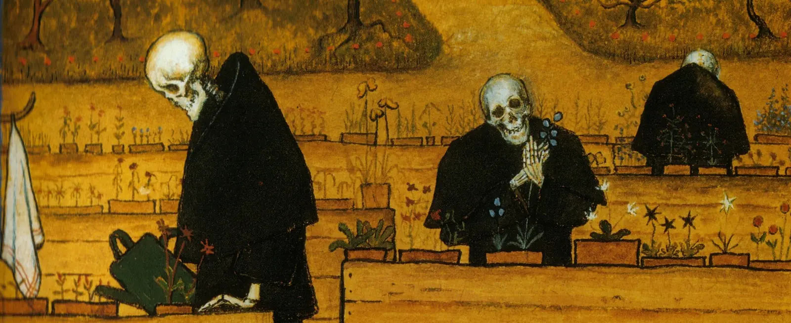

History of Medicine
How American medicine learned to talk about dying — and how law, clinical practice, and culture pulled against each other while it did.
How American medicine learned to talk about dying
 NJIT · PI: Dr. Stephen Pemberton · 2026–present
NJIT · PI: Dr. Stephen Pemberton · 2026–present
- Question
- How did legal, clinical, and cultural developments from the late twentieth century onward reshape American end-of-life care?
- Where it stands
- Developing original scholarship for submission to a peer-reviewed humanities journal.